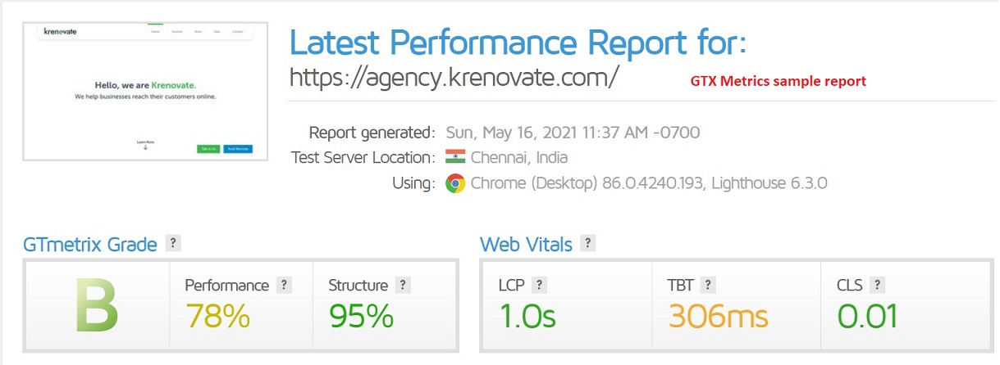
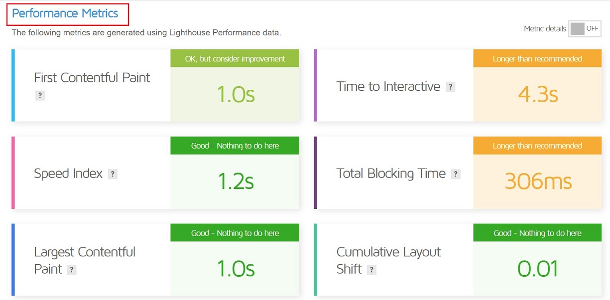
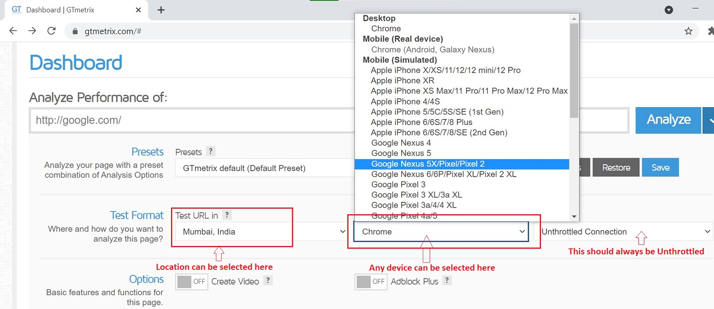
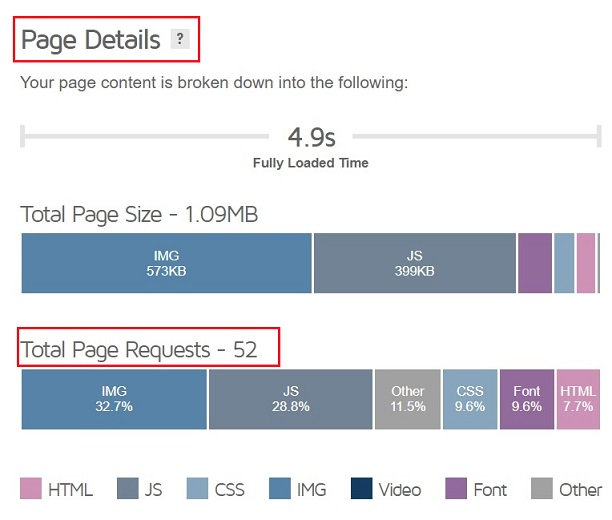
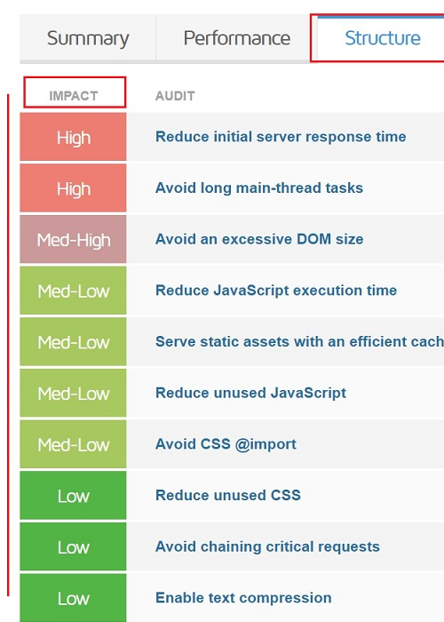
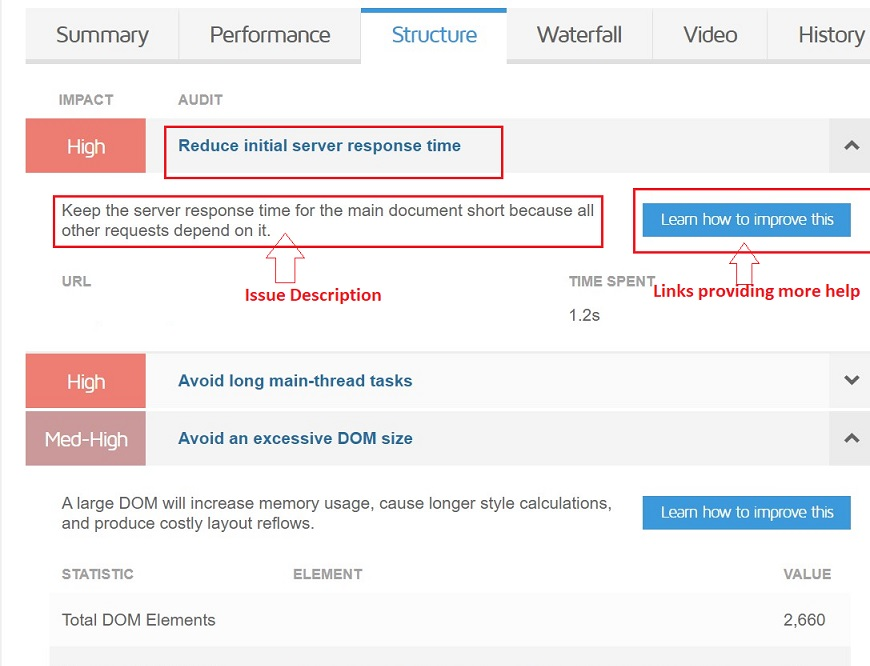
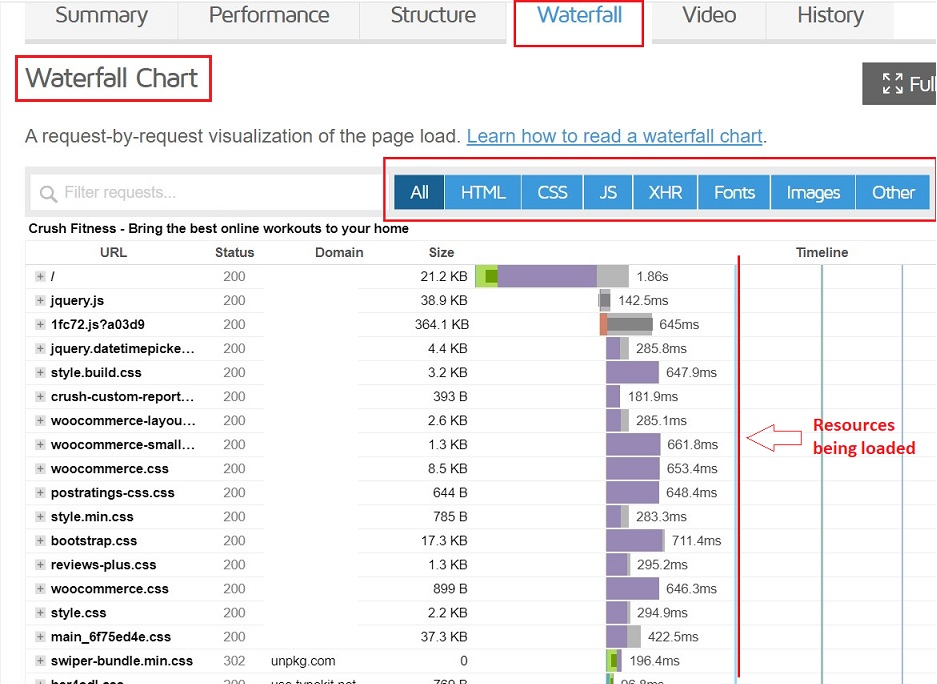
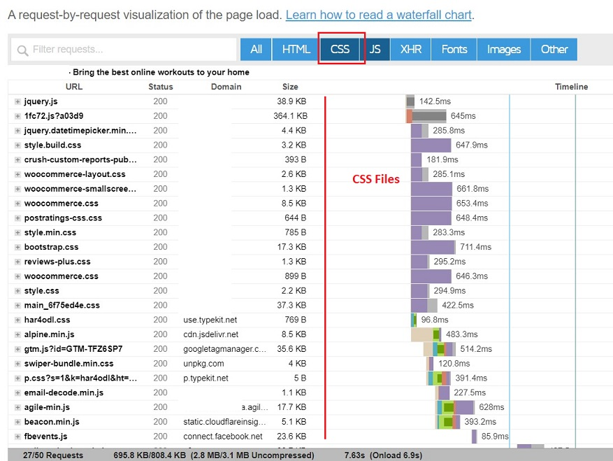

Website Optimization¶
Website optimization is the process of using tools, advanced strategies, and experiments to improve the performance of your website, further drive more traffic, increase conversions, and grow revenue.
Client Optimization¶
- WordPress frontend optimization constitutes the performance of the website when the website loads in the browser.
-
We use GTMetrix to analyse and investigate our problem. Other tools used are:
Basics of Website Optimization¶
The main aim of Website Optimization is to get good scores in all the key metrics. A sample report is below:

For every report you get GTMerix grade, consisting of 2 parts:
Performance Score¶
The Performance Score tells you how well your page performs from a user perspective.
Your Performance Score is essentially your Lighthouse Performance Score, as captured by GTmetrix, with their custom audits, Analysis Options, browser and hardware specifications.
Know more about the Performance score here.
Performance Metrics¶
The Performance score is made up of 6 key metrics:

The 6 key metrics hold the following weightage:
- First Contentful Paint (15%) - How quickly content like text or images are painted onto your page.
- Speed Index (15%) - How quickly the contents of your page are visibly populated.
- Largest Contentful Paint (25%) - How long it takes for the largest element of content (e.g. a hero image) to be painted on your page.
- Time to Interactive (15%) - How long it takes for your page to become fully interactive.
- Total Blocking Time (25%) - How much time is blocked by scripts during your page loading process.
- Cumulative Layout Shift (5%) - How much your page's layout shifts as it loads.
Structure Score¶
The Structure Score tells you how well your page is built for optimal performance.
Everything you need to know about the Structure Score
 Note:
Note:
The sample test was done for Desktop from Chennai, India. These settings also matter. You can change the location to where your customers are to get more relevant report and change your device to Mobile in order to get your mobile score.

Optimizing your Website¶
Once your report is ready you can follow the below steps to increase the performance of your website.
You can scroll down to Page Details to understand what is the request size and how is it distributed amongst assets.

Structure Tab¶
- Visit the Structure tab.
-
You will be able to see multiple impact type issues.

-
Open each issue to learn what it says - there can be links to other articles which tells better about the issue.

-
Figure out the issue after reading it. Solve it. Push it. Retest to see if it gets fixed or not.
- You should start from High Impact Issue and then go down to Lower once and try to fix as many as possible.
Waterfall Tab¶
- Visit the Waterfall tab
-
You can see exact resources being loaded.

-
Select only CSS to check all CSS files. Remove the unnecessary files and retest.

-
Repeat step 3 for JS, Fonts and Images.
- Keep a check that no unnecessary files are being loaded.
Common Practices¶
Some common practices to follow during development to make sure the website performance is well optimized:
-
Use optimized images:
- Use add_image_size hook to predefine image sizes so that when someone uploads the image, it gets cropped and resized to the required size.
- Read on how to use add_image_size
- Eg:
add_image_size ('soi-card', 561, 786, true);